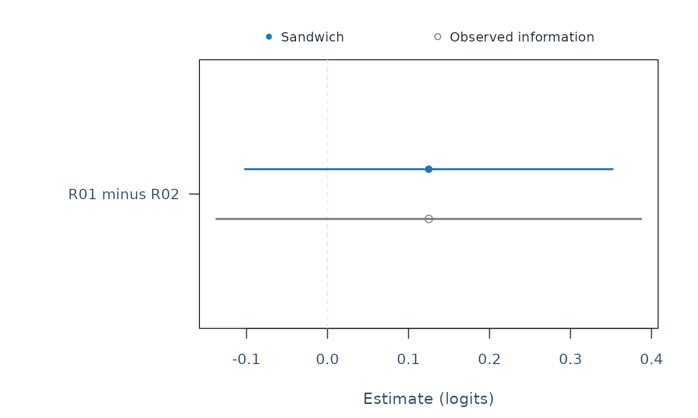
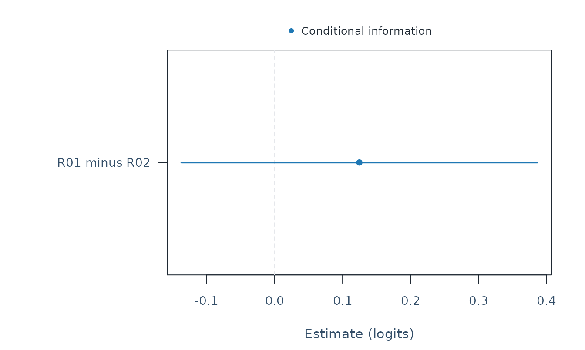
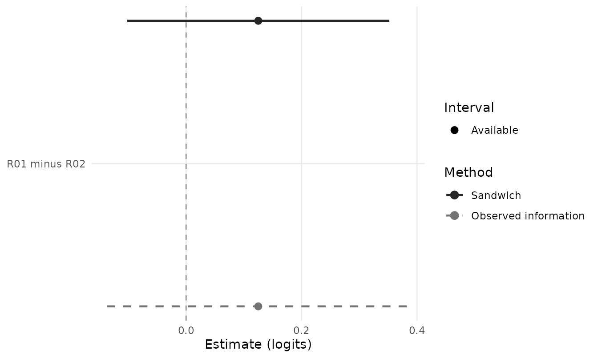

Uncertainty in rater estimates and differences
Source:vignettes/mfrmr-facet-intervals.Rmd
mfrmr-facet-intervals.RmdAn assessment team wants to discuss a difference in severity between two raters. The point estimate answers how large the fitted difference is. Its interval describes uncertainty under specified sampling and model assumptions. Neither a difference nor an interval excluding zero establishes that a rater is scoring incorrectly.
This guide first compares two covariance methods for the same fitted estimates. The ordinary method uses the fitted model’s observed information. The sandwich method also uses the variation in likelihood contributions between independent persons, or between explicitly declared larger clusters. It can change interval widths without correcting biased estimates. It then introduces CML, which changes the estimator by conditioning out Person parameters, and distinguishes native contrasts from contrasts standardized by a fitted population SD. The examples use fictional ratings.
Fit the model and identify the comparison
library(mfrmr)
ratings <- load_mfrmr_data("example_core")
fit <- fit_mfrm(ratings, "Person", c("Rater", "Criterion"), "Score",
model = "RSM", method = "MML")
ordinary <- mfrm_facet_intervals(fit, "Rater")
summary(ordinary)
#> Target Estimate SE Lower Upper ModelSE ModelLower
#> 1 R01 -0.1838153 0.08209147 -0.34471159 -0.02291895 0.08209147 -0.34471159
#> 2 R02 -0.3088478 0.08298771 -0.47150069 -0.14619486 0.08298771 -0.47150069
#> 3 R03 0.1795027 0.08202273 0.01874108 0.34026428 0.08202273 0.01874108
#> 4 R04 0.3131604 0.08294736 0.15058652 0.47573421 0.08294736 0.15058652
#> ModelUpper Status CIEligible
#> 1 -0.02291895 available TRUE
#> 2 -0.14619486 available TRUE
#> 3 0.34026428 available TRUE
#> 4 0.47573421 available TRUE
#> InferenceReview
#> 1 Pointwise normal approximation under the selected covariance method; numerical availability does not guarantee coverage.
#> 2 Pointwise normal approximation under the selected covariance method; numerical availability does not guarantee coverage.
#> 3 Pointwise normal approximation under the selected covariance method; numerical availability does not guarantee coverage.
#> 4 Pointwise normal approximation under the selected covariance method; numerical availability does not guarantee coverage.These are RSM marginal maximum likelihood estimates with a fixed
standard-normal person distribution. The interval helper also supports
PCM in this scope, with unit observation weights and fixed quadrature.
It checks the source fit’s inference readiness. When an eligible fit has
unavailable, nonpositive or regularized joint information, the returned
table retains finite points with
Status = "information_unavailable",
CIEligible = FALSE and missing uncertainty.
InferenceReview explains the failure, including any
information memory limit. Both model and sandwich intervals need the
inverse information, so switching to sandwich does not resolve this
failure. Weak information can also limit confidence in the point’s
numerical accuracy. Constraint-fixed targets retain zero SE and no
inferential interval. Invalid inputs and ineligible source fits still
produce errors. For method = "model", RSM/PCM
singleton-category fits can pass a separate review of the actual joint
information, convergence and finer quadrature while retaining
InferenceReady = FALSE in the source fit. Read the interval
object’s CIEligible, checks and
InferenceCaution. This supplies an asymptotic approximation
with a small-sample caution; it does not establish coverage or make
other analyses available. Empty categories and identification/numerical
failures are not waived. There is no ten-rating-row minimum; precision
and identification depend on the model and response patterns, not a row
count alone.
Full RSM/PCM calibration also admits one Person for JML, CML and
fixed-population MML when the applicable checks pass. A single Person
with informative independent rating events can have finite structural
estimates. This does not establish small-sample coverage: returned
interval tables retain CoverageQualified = FALSE and a
single-Person InferenceCaution. One Person cannot provide
independent- Person sandwich uncertainty or empirical between-Person
variation. JML remains a point-estimation route. Repeated ratings need a
justified independence declaration; duplicating records or relabeling
ratings as Persons is not a remedy.
The default output lists each rater. With the default sum-to-zero constraint, zero is the fitted reference across these raters; a positive value means stricter ratings. To compare R01 with R02, request their difference. Subtracting two estimates requires their covariance. Looking for overlap between their separate intervals does not calculate an interval for that difference.
contrast <- matrix(c(1, -1, 0, 0), nrow = 1,
dimnames = list("R01 minus R02", c("R01", "R02", "R03", "R04")))
difference <- mfrm_facet_intervals(fit, "Rater", contrasts = contrast,
method = "sandwich")
summary(difference)
#> Target Estimate SE Lower Upper ModelSE ModelLower
#> 1 R01 minus R02 0.1250325 0.1157806 -0.1018933 0.3519583 0.1337755 -0.1371626
#> ModelUpper Status CIEligible
#> 1 0.3872276 available TRUE
#> InferenceReview
#> 1 Pointwise normal approximation under the selected covariance method; numerical availability does not guarantee coverage.Positive values mean that R01 is stricter than R02 on this fitted scale, in logits. The named coefficients also support other prespecified linear comparisons. All facet levels must appear as columns, including those with zero coefficients. Columns are matched by name.
Estimate is common to both methods. SE,
Lower and Upper describe the selected method;
ModelSE, ModelLower and
ModelUpper retain the ordinary comparison.
Status reports whether the selected interval is available.
These are pointwise normal intervals, not simultaneous protection for a
set of comparisons. Choosing whichever method gives a preferred
conclusion is not a valid analysis strategy.
plot(difference)
The slight vertical offset distinguishes the methods. Both points have the same horizontal coordinate. The zero line denotes no difference; it is not a threshold of practical importance or a rater-quality rule. Use the size of the difference, interval, rubric and shared rating examples together when giving feedback.
Estimate a rater difference without an ability population model
Suppose the target is a fixed rater-severity difference, and a normal ability population would be a questionable assumption. For RSM/PCM, conditional maximum likelihood (CML) conditions on each person’s total across their observed ratings. The ability parameter then cancels from the likelihood. This changes the estimator, so its estimates need not equal the MML estimates above.
if (requireNamespace("lpSolve", quietly = TRUE)) {
cml_ratings <- load_mfrmr_data("example_core")
cml_fit <- fit_mfrm(cml_ratings, "Person", c("Rater", "Criterion"), "Score",
method = "CML", model = "RSM", rating_min = 1, rating_max = 4,
category_policy = "preserve")
cml_contrast <- matrix(c(1, -1, 0, 0), nrow = 1,
dimnames = list("R01 minus R02", c("R01", "R02", "R03", "R04")))
cml_interval <- mfrm_facet_intervals(cml_fit, "Rater", cml_contrast)
print(summary(cml_interval))
print(summary(cml_fit)$steps)
cml_fit$checks
}
#> Target Estimate SE Lower Upper Status CIEligible
#> 1 R01 minus R02 0.124638 0.1335936 -0.1372007 0.3864767 available TRUE
#> InferenceReview
#> 1 Pointwise conditional-information normal approximation; numerical availability does not guarantee finite-sample coverage.
#> ModelSE ModelLower ModelUpper
#> 1 0.1335936 -0.1372007 0.3864767
#> Step Estimate SE Lower Upper Status CIEligible
#> 1 Step_1 -1.21486799 0.1167688 -1.4437306 -0.9860054 available TRUE
#> 2 Step_2 -0.05942168 0.1019062 -0.2591541 0.1403108 available TRUE
#> 3 Step_3 1.27428967 0.1162168 1.0465090 1.5020703 available TRUE
#> InferenceReview
#> 1 Pointwise conditional-information normal approximation; numerical availability does not guarantee finite-sample coverage.
#> 2 Pointwise conditional-information normal approximation; numerical availability does not guarantee finite-sample coverage.
#> 3 Pointwise conditional-information normal approximation; numerical availability does not guarantee finite-sample coverage.
#> $conditional_ranks
#> [1] 8 8 8
#>
#> $boundary
#> $boundary$state
#> [1] "no_recession_detected"
#>
#> $boundary$solver_status
#> [1] 0
#>
#> $boundary$objective
#> [1] 0
#>
#> $boundary$support_gap
#> [1] 0
#>
#> $boundary$gain
#> [1] 0
#>
#> $boundary$direction
#> [1] 0 0 0 0 0 0 0 0
#>
#>
#> $gradient_max
#> [1] 4.644392e-10
#>
#> $information_eigenvalues
#> [1] 2.0921224 2.0077636 1.4064569 0.5741801 0.5054831 0.5029126 0.4993331
#> [8] 0.4117480
#>
#> $inverse_error
#> [1] 2.220446e-16
#>
#> $information_status
#> [1] "available"
#>
#> $information_reason
#> [1] ""The comparison’s Estimate, SE,
Lower and Upper answer the same native-scale
rater-difference question. Its covariance comes from the full
conditional information, including jointly estimated criterion
effects and steps. summary(cml_fit)$locations lists the
centered facet estimates. Use
model = "PCM", step_facet = "Criterion" when criteria own
separate steps. The package computes conditional normalizing constants
with a generalized ESF recursion and checks identification, finite-MLE
existence and numerical convergence. The optional lpSolve
package is needed for the finite-MLE check.
If those checks pass but conditional information cannot be evaluated
or safely inverted, the fit retains its finite numerical point estimates
with a warning. Read cml_fit$checks$information_status and
cml_fit$checks$information_reason. Summaries and facet
intervals keep the points, with missing SE/bounds,
CIEligible = FALSE and a reason in
InferenceReview; vcov() returns an
NA matrix and default confint() retains
missing bounds with diagnostic reasons. A small score residual alone
does not ensure point accuracy along weak directions. Retention allows
the result to be inspected and saved; it does not qualify formal
inference. Identification, boundary and stationarity failures remain
separate restrictions.
if (requireNamespace("lpSolve", quietly = TRUE)) plot(cml_interval, comparison = FALSE)
Save cml_fit and cml_interval with
saveRDS() to retain the covariance, contrast and checks.
The dedicated mfrm_cml_fit has no Person estimates or
population distribution. Ordinary fit diagnostics and consolidated
mfrm_results() reports are outside this initial route; the
interval object’s own summary and plot are available.
CML can remain consistent when the number of Persons grows with a
fixed number of ratings per Person, under a correct conditional response
model, independent Persons, fixed structural dimension and information
growing in every identified direction. Adding only extreme-total Persons
does not improve precision, and a contrast supported by only a few
Persons can remain imprecise even in a large dataset. The conditional
model must hold for the actual rating roster; response-dependent
assignment, stopping or missingness needs separate justification. This
does not guarantee nominal Wald coverage in a small sample. See
help("fit_mfrm") for a sufficient regular regime and the
covariance calculation for an identified subspace. A facet constant
within each Person, such as school membership, disappears on
conditioning: its main effect cannot be estimated by CML. The full-model
route refuses a deficient parameterization. For identifiable interaction
contrasts despite other aliased directions, use the explicit
fit_scope = "comparisons" route demonstrated in
vignette("mfrmr-linking-and-dff"); unavailable targets
remain missing.
A bounded check reused the earlier MML comparison’s data-generation settings and seeds: RSM/PCM, 80/320 Persons, and either six ratings under a normal ability distribution or three ratings under a standardized-lognormal ability distribution with two sparse rosters. All 1,600 CML fits returned the four prespecified native contrasts. In the combined skewed/sparse conditions, truth coverage was 93.0–98.0%, compared with the earlier MML sandwich range of 87.0–95.5% on the same datasets. Across all conditions CML coverage ranged from 92.5 to 98.5%. Each condition has 200 replications, giving MCSE about 1.54 percentage points near 95%. These ranges describe particular conditions and dependent contrasts; they do not establish nominal coverage for every design. Because population shape and roster sparsity changed together, this comparison does not isolate their separate effects.
Standardize by the same fit’s estimated ability SD
For an MML fit with population_formula = ~1,
mfrm_facet_intervals(fit, "Rater", contrasts = contrast, scale = "standardized")
divides the contrast by that fit’s estimated ability population SD. The
contrast must have coefficients summing to zero. It uses the joint delta
method, including the covariance between the contrast and the estimated
SD; simply dividing an existing interval by the fitted SD omits that
uncertainty.
If the native contrast is , , and , its derivative with respect to is . The full fitted covariance is transformed by this derivative:
Because of the covariance term, accounting for estimated SD does not always increase the SE. Even a zero estimated contrast can have positive uncertainty. This is an effect-size contrast, not the Wald statistic obtained by dividing by the contrast’s SE.
The regular delta method requires a fixed true SD strictly above zero and a correctly specified, identified marginal model with an interior solution and sufficient information. A positive fitted SD alone does not establish these conditions. At zero SD the target is undefined; near zero the ratio and its normal approximation can be unstable. There is no universal SD cutoff that certifies validity. Population assumptions must hold for the actual rating assignments and covariates; an overall normal distribution need not remain the same within rosters selected according to ability.
MML also approximates a continuous integral. A fixed number of
integration points can leave numerical error as the sample grows and
sampling SEs shrink. Comparing quadrature orders is a useful sensitivity
check, but agreement does not prove that numerical error is negligible.
Standardization repairs neither integration error nor a misspecified
ability distribution. See the MML assumptions in
?mfrm_facet_intervals before interpreting these normal
intervals.
CML estimates no population SD, so this particular standardized contrast is unavailable from a CML fit alone. A standard deviation of estimated Person scores is not a substitute. Fixed-standard-normal MML uses a fixed SD of one; it should not be described as estimating the standardizer. Conditional-normal latent regression has a residual SD, which is a different estimand and is not accepted by this population-SD transformation.
Read fixed values and group constraints correctly
In the ordinary fixed-population RSM/PCM route, supplied anchors and
group means are treated as exact. Their source calibration error is not
included. Status = "fixed", SE zero and missing bounds mean
that the requested value cannot vary under the declared constraints,
rather than that it was estimated with perfect precision.
This can happen even without a direct anchor for that level. With four raters centered across the whole facet, fixing the first three raters’ mean at 0.10 also fixes the fourth at -0.30. The first three can still differ; their individual intervals may be available while an interval for their mean is not. A difference between an anchored and a free rater can also remain uncertain.
The calculation carries the full joint covariance through the fitted
constraints and your comparison coefficients. It retains the uncertainty
due to estimating other facets and thresholds. Adding printed SEs, or
calculating information only for the selected rater, cannot replace that
calculation. For cross-software comparisons, note that TAM’s
tam.se() documentation explicitly describes ignoring
covariances between parameter estimates. Match the uncertainty
calculation as well as the response model.
Anchored models with an estimated population have a separate limitation: their point estimates are supported, but the native location/population interval helpers currently exclude anchors and group constraints. See the linking guide for the distinction.
Prepare a sheet for one rater
The functions below answer different practical questions. You can make a figure or a report directly from saved results; neither is required before saving the analysis.
| What do you need? | Function and returned object |
|---|---|
| Retain the fit, diagnostics and chosen intervals together |
mfrm_results() returns the analysis object. |
| Show a saved interval |
plot() draws it; as_ggplot() returns a
supported ggplot view. |
| Read an analyst report |
mfrm_report() returns a quality-control report by
default. |
| Prepare one recipient’s sheet |
mfrm_report(..., style = "rater", output = "html")
returns a temporary file path and its content. |
| Save the complete analysis for later work |
saveRDS() writes one R object;
export_mfrm_results() writes a folder of selected
outputs. |
The development version can summarize one rater’s saved results for a
feedback conversation. An individual interval and a difference between
raters answer different questions: attach ordinary here
because it contains each rater’s coefficient. A saved contrast alone
cannot become an individual interval.
diagnostics <- diagnose_mfrm(fit, residual_pca = "none")
feedback_results <- mfrm_results(fit, diagnostics = diagnostics,
intervals = list(raters = ordinary), compute = "never")
sheet <- mfrm_report(feedback_results, style = "rater", facet = "Rater",
rater = "R01", interval = "raters", output = "html", max_cases = 5)
sheet$report$tables$severity
#> Severity Reference
#> 1 -0.1838153 0
sheet$report$tables$uncertainty
#> Level Lower Upper Method Available
#> 1 0.95 -0.3447116 -0.02291895 model TRUE
#> Reason
#> 1 Saved interval is numerically available under its stated assumptions; coverage is not guaranteed.
# Open sheet$path in a browser. Review before copying the HTML file for sharing.The file contains scoring tendency, its saved interval, exposure,
ordinary Infit/Outfit, category use and selected unexpected ratings. It
has category-use bars, numerical tables, print styling and no external
resources. Set audience = "researcher" for technical
guidance, or max_cases = 0 to omit individual cases. Page
count depends on the content and print settings.
Choose style for the report’s purpose and
output for its format. Omitting style produces
an analyst report, and omitting output returns an R object
without creating an HTML file. Neither
audience = "researcher" nor output = "html"
selects a different interval method or confidence level: those choices
belong to the earlier mfrm_facet_intervals() call. The
default sheet includes up to five unexpected ratings; set
max_cases = 0 explicitly if the conversation only needs
aggregate summaries.
The default label is “Selected rater”. Other raters’ identities,
Person identifiers, task labels and original row numbers are omitted
from the sheet and its report object. An explicit label
will be displayed. Scores or small groups may still be recognizable, so
review the content before sharing. Distribute this standalone HTML file,
not the comprehensive results bundle.
The sheet does not refit, recalculate uncertainty, select a warning
threshold or decide whether a rater is good or bad. Inspect the full
saved interval result and its numerical cautions before preparing the
sheet. Missing inputs are explained. If multiple attached interval
results contain the selected individual coefficient, choose one
explicitly with interval = "raters". The supported contents
depend on the fitted model:
| Fitted model | Individual sheet |
|---|---|
| Additive RSM/PCM, MML | Severity, supplied fixed-facet intervals, ordinary diagnostics and category use as illustrated here. |
| Additive RSM/PCM, ordinary JML | Descriptive severity, supplied diagnostics and category use; no formal fixed-facet interval is added. |
| Two-family GPCM, MML | Experimental location, component slope, category use and supplied posterior residuals. Only saved component-slope intervals appear in this sheet. |
| One-family GPCM, corrected JML, fitted interactions, imported fits, testlet or shared-random-rater models | Individual sheets are unavailable; use the model-specific analyst results and reports. |
For the two-family route, see the GPCM guide. Its locations, slopes and residuals have different meanings from the ordinary-model quantities above. A successful sheet export does not establish interval coverage or rater competence.
Save the analysis and keep a copy of the sheet
The HTML path is temporary. To keep the sheet after the R session ends, copy the reviewed file to a location you choose. Save the complete analysis separately if you need to prepare another sheet later. The following example uses temporary paths; replace them with your own analysis and recipient-file paths for continuing work.
analysis_file <- tempfile(fileext = ".rds")
saveRDS(feedback_results, analysis_file)
saved_results <- readRDS(analysis_file)
# Reuse the saved diagnostics and intervals for this recipient.
saved_sheet <- mfrm_report(saved_results, style = "rater", facet = "Rater",
rater = "R01", interval = "raters", output = "html", max_cases = 5)
recipient_file <- tempfile(fileext = ".html")
stopifnot(file.copy(saved_sheet$path, recipient_file, overwrite = FALSE))The RDS file retains the fitted data and identifiers for the analyst. The recipient HTML contains the selected summaries described above. Copying the HTML does not require sending the RDS file. Reading the saved analysis and preparing another sheet does not rerun estimation or diagnostics; it also does not update an earlier analysis to reflect new ratings.
Keep interpretation with exported tables
For a table-based handoff, request the recipient’s tables rather than
using the full analyst export. Retain interpretation_notes
alongside the numbers: it explains the overall review status, the
audience and each section, including missing inputs. The HTML and
Markdown formats already show these explanations beside their
sections.
sheet_tables <- mfrm_report(saved_results, style = "rater", facet = "Rater",
rater = "R01", interval = "raters", output = "tables", max_cases = 5)
sheet_tables$interpretation_notes
#> Section
#> 1 review
#> 2 guidance
#> 3 severity
#> 4 exposure
#> 5 uncertainty
#> 6 fit
#> 7 categories
#> 8 cases
#> Note
#> 1 Review the assessment context before sharing or acting on this sheet.
#> 2 Use this sheet to discuss scoring patterns with the assessment team. Differences may reflect the ratings assigned as well as the model's assumptions.
#> 3 Positive values indicate a tendency toward lower scores; negative values indicate higher scores, after accounting for the other modeled effects. Zero is the model's reference, not necessarily the other raters' average. This model scale differs from the rubric's scores. Severity is not rater quality.
#> 4 Counts cover retained rating rows only. They do not measure completion of planned assignments. Weight sum describes estimation weights; the other counts are unweighted.
#> 5 This approximate interval describes uncertainty in this rater's scoring tendency under the analysis assumptions. It is not a guarantee of accuracy or a judgement of scoring quality. The model-based calculation depends on the model's assumptions.
#> 6 Values above 1 describe more variation than the model expects; values below 1 describe less. Infit gives more weight to ratings that help distinguish performance levels. Outfit is more influenced by unusual ratings. Neither is a verdict on the rater. No automatic warning cutoff is applied; missing values remain unavailable.
#> 7 Category use describes these ratings and the people assigned to this rater. Unequal use alone does not show a problem with the rubric or the rater.
#> 8 These are the largest departures from expected scores, taking expected variation into account. They are discussion examples, not automatically scoring errors. Positive residuals mean higher scores than expected. Case numbers refer only to this list, not the original data rows.
table_dir <- tempfile("rater-tables-")
dir.create(table_dir)
for (name in names(sheet_tables)) {
if (ncol(sheet_tables[[name]]) > 0) {
write.csv(sheet_tables[[name]], file.path(table_dir, paste0(name, ".csv")),
row.names = FALSE)
}
}Choose a permanent folder instead of tempfile() for
continuing work. Sections with no supplied table are explained in
interpretation_notes; their absence is not evidence of a
satisfactory result. These CSV files do not contain the fitted analysis
and cannot be used to reconstruct it. Review the selected rating
examples before sharing, even though source identifiers are omitted. Use
max_cases = 0 to exclude those examples.
Carry the same intervals into figures and reports
Suppose the assessment team has chosen a rater difference and its interval method. The figure, table and report should describe that same choice. Attach the saved result instead of calculating a new interval during reporting:
results <- mfrm_results(fit, intervals = list(difference = difference),
include = c("fit", "plots"), compute = "never")
apa_table(difference)
#> Fixed-facet uncertainty
#> Target Estimate SE Lower Upper ModelSE ModelLower ModelUpper
#> R01 minus R02 0.13 0.12 -0.1 0.35 0.13 -0.14 0.39
#> Status CIEligible
#> available TRUE
#> InferenceReview
#> Pointwise normal approximation under the selected covariance method; numerical availability does not guarantee coverage.
#> Facet Method ConfidenceLevel Adjustment
#> Rater sandwich 95% Pointwise
#> Note. Pointwise normal intervals conditional on the observed facet levels; changing covariance does not correct biased estimates. Fixed and unavailable targets remain present. No rater-quality decision is implied.
plot_data(results, type = "facet_difference", component = "table")
#> Target Estimate SE Lower Upper ModelSE ModelLower
#> 1 R01 minus R02 0.1250325 0.1157806 -0.1018933 0.3519583 0.1337755 -0.1371626
#> ModelUpper Status CIEligible
#> 1 0.3872276 available TRUE
#> InferenceReview
#> 1 Pointwise normal approximation under the selected covariance method; numerical availability does not guarantee coverage.
report <- mfrm_report(results)
report$tables$facet_difference_intervals
#> Target Estimate SE Lower Upper ModelSE ModelLower
#> 1 R01 minus R02 0.1250325 0.1157806 -0.1018933 0.3519583 0.1337755 -0.1371626
#> ModelUpper Status CIEligible
#> 1 0.3872276 available TRUE
#> InferenceReview
#> 1 Pointwise normal approximation under the selected covariance method; numerical availability does not guarantee coverage.
#> Facet Method ConfidenceLevel Adjustment
#> 1 Rater sandwich 95% PointwiseThe name difference becomes the plot route
facet_difference. A single unnamed result,
intervals = difference, uses facet_inference.
Several named results can retain different facets, confidence levels or
prespecified contrasts. They must all come from the same fitted
analysis. A mismatch in data, fitted parameters, constraints, population
or integration settings is rejected. An ordinary comparison interval
remains separate from the selected sandwich interval, including when the
latter is unavailable.
as_ggplot(results, type = "facet_difference", title = NULL, subtitle = NULL,
preset = "monochrome")
plot(results, type = "facet_difference") uses base
graphics; as_ggplot() supports further ggplot
customization. Both use the saved values. title = NULL,
subtitle = NULL, caption = NULL,
reference = NULL and show_legend = FALSE omit
the corresponding display parts without changing the stored interval
method, level or status. Keep those details in the figure legend or
accompanying text when publishing a minimal figure. Shape cues retain
unavailable and fixed targets.
summary(results)$reproducible_code shows how to save the
complete result and reload it later. In that code, res
denotes your result object: use res <- results for this
example and choose the file path before saving. Reloading preserves the
attached intervals; reconstructing results from fit alone
would omit them.
export_mfrm_results(results, ...) includes the selected
tables and figures. With preset = "starter", its
index.html also links the saved interval figures and
describes their methods and confidence levels. When replay is requested,
it also saves the RDS and a script that reloads it; replay does not
refit the model or recalculate covariance. The settings, contrast
coefficients and cluster mapping are retained alongside the interval
table. These saved objects contain fitted data and participant
identifiers; follow the export function’s data-handling guidance before
sharing them.
For an analyst archive with tables, a report and reload instructions,
select the components explicitly. include controls files
written by the exporter; it does not compute missing analysis
components. The folder below retains participant data, which is why this
example explicitly acknowledges it.
archive <- export_mfrm_results(feedback_results,
output_dir = tempfile("rater-analysis-"),
include = c("tables", "report", "replay", "manifest"),
acknowledge_sensitive = TRUE)
# Count files by format; inspect archive$written_files for the full index.
table(archive$written_files$Format)
#>
#> csv html md R rds
#> 174 1 1 1 1
archive$plot_errors
#> [1] Plot Error
#> <0 rows> (or 0-length row.names)
saved_file <- archive$written_files$Path[
archive$written_files$Component == "results_rds"]
reopened <- readRDS(saved_file)
stopifnot(identical(reopened$facet_intervals, feedback_results$facet_intervals))Requesting replay also writes the complete RDS. The script reloads it
without requiring the original session’s fit, diagnostics or interval
variables. No plots are requested in this example. Add
"plots" to export available figures, or use
preset = "starter" for the fuller archive. This export
preset selects file contents; a plotting
preset such as "monochrome" selects
appearance. An empty plot_errors table only confirms that
no requested plot failed, not that a figure was requested or that the
statistical analysis is valid. The report in this archive is the analyst
report; use the standalone recipient file created above for the feedback
conversation.
This route also works for PCM, whose step structure is declared when fitting:
fit_pcm <- fit_mfrm(ratings, "Person", c("Rater", "Criterion"), "Score",
model = "PCM", step_facet = "Criterion", method = "MML")
pcm_difference <- mfrm_facet_intervals(fit_pcm, "Rater", contrasts = contrast,
method = "sandwich", level = 0.90)
pcm_results <- mfrm_results(fit_pcm, intervals = list(difference = pcm_difference),
include = c("fit", "plots"), compute = "never")
apa_table(pcm_difference)
#> Fixed-facet uncertainty
#> Target Estimate SE Lower Upper ModelSE ModelLower ModelUpper
#> R01 minus R02 0.13 0.12 -0.07 0.32 0.13 -0.09 0.35
#> Status CIEligible
#> available TRUE
#> InferenceReview
#> Pointwise normal approximation under the selected covariance method; numerical availability does not guarantee coverage.
#> Facet Method ConfidenceLevel Adjustment
#> Rater sandwich 90% Pointwise
#> Note. Pointwise normal intervals conditional on the observed facet levels; changing covariance does not correct biased estimates. Fixed and unavailable targets remain present. No rater-quality decision is implied.RSM and PCM estimate facet locations while holding discrimination
fixed; GPCM slope intervals concern a different target. Attaching a
fixed-facet interval does not replace the uncertainty in an ordinary
Wright map, alter Infit/Outfit, or provide uncertainty for individual
Person scores. Use the facet_ route when you want to
display the attached covariance method.
Declare what can be treated as independent
By default, all responses from one person form one sampling unit. A person rated many times does not provide that many independent units. The software first sums their likelihood contributions, then forms the sandwich covariance. Repeated performances by the same person should not be treated as independent merely because they were entered under different IDs.
If persons share a school, clinic or other source of dependence, and those larger clusters can reasonably be treated as independent of one another, supply a person-to-cluster mapping. This fictional mapping only demonstrates the syntax: it is not evidence that the example contains actual schools.
persons <- sort(unique(ratings$Person))
schools <- data.frame(Person = persons,
Cluster = rep(sprintf("School%02d", 1:16), each = 3))
school_difference <- mfrm_facet_intervals(
fit, "Rater", contrasts = contrast, method = "sandwich", clusters = schools
)
school_difference$settings[c("persons", "clusters", "cluster_score_rank")]
#> $persons
#> [1] 48
#>
#> $clusters
#> [1] 16
#>
#> $cluster_score_rank
#> [1] 8
summary(school_difference)
#> Target Estimate SE Lower Upper ModelSE ModelLower
#> 1 R01 minus R02 0.1250325 0.1236645 -0.1173455 0.3674105 0.1337755 -0.1371626
#> ModelUpper Status CIEligible
#> 1 0.3872276 available TRUE
#> InferenceReview
#> 1 Pointwise normal approximation under the selected covariance method; numerical availability does not guarantee coverage.Every fitted person must appear exactly once. Use the column names
Person and Cluster in this mapping even if the
original data use different names. The number of independent clusters,
rather than the number of rating rows, governs the large-sample
approximation. Sixteen schools in this illustration are not a
recommendation or a demonstrated sufficient sample size.
adjust = TRUE multiplies the covariance by
G/(G-1), where G is the number of independent
clusters. This simple scaling does not supply a small-sample guarantee
or change the normal reference distribution. It is off by default. The
user must justify the independence assumption; supplying a mapping does
not establish it.
Keep unavailable results visible
When cluster likelihood scores do not span the free-parameter space, the selected sandwich interval is unavailable. The estimate and ordinary comparison remain visible. A fixed anchor has an exact supplied value and no inferential interval; its uncertainty is outside this calculation.
two_groups <- schools
two_groups$Cluster <- rep(c("A", "B"), each = 24)
unavailable <- mfrm_facet_intervals(
fit, "Rater", contrasts = contrast, method = "sandwich", clusters = two_groups
)
summary(unavailable)[, c("Target", "Estimate", "Lower", "Upper", "Status")]
#> Target Estimate Lower Upper Status
#> 1 R01 minus R02 0.1250325 NA NA insufficient_cluster_rankIncreasing the cluster count until this numerical restriction disappears does not establish coverage. A small number of clusters can still yield poor intervals. In plots, a cross marks an unavailable selected interval and an open diamond marks a fixed target. An ordinary comparison interval is never used to replace a missing sandwich interval.
Understand what the sandwich can and cannot address
With many independent units and the required regularity, a sandwich covariance describes variation around the parameter targeted by the fitted working model. If that model is misspecified, this pseudo-true parameter can differ from the generating rater severity. For example, a strongly skewed ability distribution can change the limiting rater difference when the fit insists on a standard normal distribution. Altering the standard error does not remove that shift.
Sparse assignment also needs substantive review. An unassigned rating
is not a missing score to fill in; selective assignment can confound
rater differences with population differences. Nonresponse depending on
an unobserved score is another modeling problem. None of these problems
is solved solely by selecting method = "sandwich".
The intervals condition on the observed fixed raters
and other facets. They do not describe replacing raters with new draws
from a rater population. If shared random rater or task effects span the
declared clusters, this one-way independence assumption is
inappropriate. The method is not a multiway crossed-cluster estimator.
G/D-study planning, variance-component boundaries, EAP person-score
uncertainty and multiple-imputation pooling require their own methods.
In particular, pool_mfrm_imputed() continues to use its
documented within-imputation model covariance; this helper does not
change that workflow.
Review quadrature sensitivity separately. The interval helper reuses the fitted integration grid and does not refit the model.
What the bounded simulation showed
A comparison used RSM and PCM, 80 or 320 independent persons, three fixed raters, two criteria and scores from 0 to 2. Each of the eight conditions had 200 independently generated datasets. One scenario used standard-normal ability and six ratings per person. The other combined standardized lognormal ability with three ratings per person; assignment was independent of ability and responses. Thus the second scenario challenges both distribution and design together, without isolating their separate effects.
The comparison evaluated three rater differences and one criterion difference on each same fitted dataset. All 1,600 datasets returned both interval methods. The entries below are ranges across conditions and contrasts, not pooled coverage estimates or confidence bounds. All intervals had a nominal 95% level.
| Scenario and reference target | Observed information | Sandwich |
|---|---|---|
| Matched normal model: generating truth | 92.0–98.0% | 92.5–98.0% |
| Skewed ability and sparse assignment: generating truth | 84.5–95.0% | 87.0–95.5% |
| Skewed ability and sparse assignment: working-model target | 90.0–97.5% | 93.0–97.5% |
For example, in the 320-person RSM scenario with skewed ability and sparse assignment, the sandwich covered the generating criterion difference in 87.0% of datasets (95% Monte Carlo interval: 81.5–91.3%). Coverage of the independently calculated working-model target was 96.0% (92.3–98.3%). The same estimates and intervals produced these different answers because the two target values differ. For the R1–R3 difference in the corresponding 320-person PCM scenario, generating-truth coverage was 90.0% (85.0–93.8%). Rater comparisons are therefore subject to this limitation too.
With 200 datasets per condition, Monte Carlo standard error near 95% coverage is about 1.54 percentage points. These results do not demonstrate uniform improvement or a guarantee of nominal coverage. Schools, few independent clusters, shared random raters, informative assignment and nonresponse were not evaluated by this simulation.
Save the analysis and use the plotted data
saved <- tempfile(fileext = ".rds")
saveRDS(difference, saved)
restored <- readRDS(saved)
summary(restored)
#> Target Estimate SE Lower Upper ModelSE ModelLower
#> 1 R01 minus R02 0.1250325 0.1157806 -0.1018933 0.3519583 0.1337755 -0.1371626
#> ModelUpper Status CIEligible
#> 1 0.3872276 available TRUE
#> InferenceReview
#> 1 Pointwise normal approximation under the selected covariance method; numerical availability does not guarantee coverage.
plotted <- plot(restored, draw = FALSE)
plot_data(plotted)$table
#> Target Estimate SE Lower Upper ModelSE ModelLower
#> 1 R01 minus R02 0.1250325 0.1157806 -0.1018933 0.3519583 0.1337755 -0.1371626
#> ModelUpper Status CIEligible
#> 1 0.3872276 available TRUE
#> InferenceReview
#> 1 Pointwise normal approximation under the selected covariance method; numerical availability does not guarantee coverage.The saved result retains the estimates, covariance matrices,
likelihood scores, cluster mapping, contrasts, settings and source fit.
Printing or plotting it does not fit the model again. Use
write.csv(result$table, "intervals.csv", row.names = FALSE)
to export a table, and keep the RDS result for its context. Use
plot_data() for custom graphics; automatic
as_ggplot() conversion is not provided for these method
comparisons.
References
The sandwich construction follows the estimating-function framework described by Zeileis (2006). Zeileis, Koell and Graham (2020) discuss clustered covariance estimators and their distinctions. These references support the covariance framework; they do not establish finite-sample accuracy for every MFRM design.